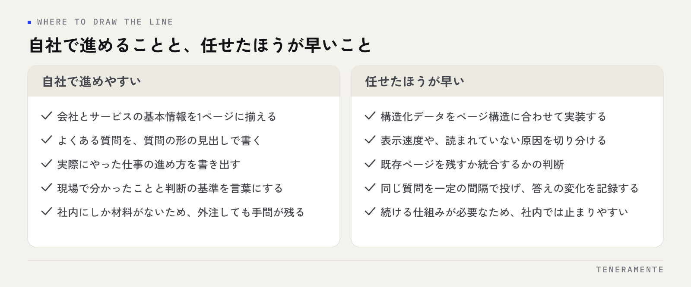

AIO対策の依頼を考えるとき、最初に迷うのは「どこまで自社でやれるのか」です。結論から申し上げると、AIO対策の作業の半分は社内の情報を整えることで、ここは外注しても自社の手間が消えません。残りの半分は技術的な実装と継続的な確認で、ここは任せると早く進みます。この線引きを先に引いておくと、見積もりの読み方も、依頼先への質問も変わります。
📌 この記事の結論
AIO対策（AI Optimization）は、自社の情報を言葉にする作業と、技術的に整える作業に分かれます。前者は社内にしか材料がないため外注しても手間が残り、後者は外に任せると早く終わります。依頼を考えるなら、まず自社で何が言葉になっているかを確かめてから、足りない部分だけを渡してください。
01AIO対策の依頼とは、何を頼む仕事なのか
AIO対策という言葉は、やることの範囲が人によってまるで違います。依頼を検討する前に、何が含まれるのかを分解しておくと話が噛み合います。
大きく分けると4種類です。第一に、サイトの技術的な整備。構造化データの実装、ページの表示速度、クロールできる状態の確認、llms.txt の設置などが入ります。第二に、コンテンツの整備。AIが答えの材料として拾いやすい形に、自社の情報を書き直す作業です。第三に、自社サイト以外の情報源の整備。会社情報の掲載、業界サイトへの登録、口コミや紹介記事といった第三者からの言及です。第四に、確認と記録。AI検索に実際に質問してみて、どう答えられているかを定期的に記録する作業です。
見積もりを見比べて金額が合わないときは、たいていこの4つのどこを見ているかが違います。「AIO対策一式」と書かれた提案を受け取ったら、この4つのどれが入っていて、どれが入っていないかを先に聞いてください。AI検索の仕組みそのものはAI検索時代に引用されるサイトの作り方に整理しています。
02自社だけでも進められること
社内で手を動かせば進む作業は、思ったより多くあります。ここを外注しても、結局は社内への質問の往復が発生するので、先に自社で片付けたほうが速いことがほとんどです。
まず、会社とサービスの基本情報を1ページに揃えること。事業内容、対応エリア、対応している業務の範囲、料金の考え方、問い合わせ方法。これらが複数ページに散っていると、AIは拾い切れません。次に、よくある質問を質問の形で書くこと。「対応エリアはどこですか」という問いに対し、そのままの見出しで答えを置く形が、AIにとっていちばん読みやすい形です。
そして、自社の一次情報を書き出すこと。実際にやった仕事の進め方、現場で分かったこと、判断の基準。これは社内にしか材料がありません。外注先が書けるのは、社内で誰かが話した内容を文章にする部分までです。
先に確かめること
依頼を検討する前に、自社名・サービス名・「地域名＋業種」で、ChatGPT や Perplexity に実際に質問してみてください。何が答えられて何が間違っているかで、必要な作業が変わります。確かめ方はChatGPT検索で自社を表示させる手順にまとめています。
03外に任せたほうが早いこと
逆に、社内で抱えると止まりやすいのは、技術と継続の部分です。

構造化データ（JSON-LD）の実装は、書き方そのものは公開されていますが、自社のページ構造に合わせて正しく入れ、エラーを潰すまでが作業です。ここで止まっている会社は少なくありません。サイトの表示速度や、JavaScript で描いている部分がAIに読まれていないといった問題も、原因の切り分けに慣れが必要です。
もう一つは、確認の継続です。AI検索の答えは同じ質問でも揺れます。一度確かめて終わりではなく、一定の間隔で同じ質問を投げ、答えの変化を記録していく必要があります。この作業は難しくありませんが、担当者の片手間に置くと真っ先に止まります。続ける仕組みとして外に出す価値がある部分です。
既存サイトの構造を変える判断も、任せたほうが早い領域です。どのページを残し、どれを統合するか。社内だけで決めると、過去の経緯が優先されて判断が鈍ります。
04依頼の形は、大きく3つに分かれる
依頼の仕方は次の3通りです。費用の性質も、自社に残る手間も違います。
| 依頼の形 | 任せる範囲 | 自社に残る作業 | 向いている状況 |
|---|---|---|---|
| 診断・設計のみ | 現状の確認と、何をすべきかの整理 | 実装と運用のすべて | 社内に手を動かせる人がいる |
| 実装を単発で依頼 | 構造化データ・サイト構造・初期の整備 | 原稿づくりと、その後の確認 | 技術部分だけ止まっている |
| 継続運用を依頼 | 実装・記事づくりの支援・定期的な確認と報告 | 社内情報の提供と、内容の確認 | 続ける担当者を置けない |
この表の右の列が、自社に残る作業です。どの形を選んでも、社内の情報を渡す手間はゼロになりません。提案を読むときは、自社に残る作業が書かれているかを見てください。そこが書かれていない提案は、契約後に「社内で用意してください」が増えます。
05依頼先に確認する質問リスト
問い合わせの段階で聞いておくと、後で揉めません。そのまま使えるように並べます。
- 作業範囲は、技術的な整備・コンテンツ・自社サイト以外の情報源・確認と記録のうちどこまでですか
- 構造化データは、どのページにどの種類を入れますか
- 記事やページの原稿は、どちらが書きますか。素材はどう渡しますか
- AI検索での表示は、どの質問文で、どの間隔で確認しますか
- 報告には何が載りますか。実際の回答の文面は残りますか
- 契約が終わったあと、入れた実装や作った原稿は自社に残りますか
- 担当者は何人で、誰が実作業をしますか
最後の2つは特に大事です。AIO対策は自社サイトに資産が積まれる仕事なので、契約終了時に引き継げる形になっているかで、支払った費用の意味が変わります。
06契約前に決めておく、範囲と報告の中身
範囲は、やることだけでなく「やらないこと」まで書いてもらうと安全です。たとえば、既存ページの文章修正は含むのか含まないのか。新規記事は何本までか。サイトの改修に開発側の作業が必要になったとき、誰が手を動かすのか。
報告については、何が書かれるかを先に見せてもらってください。AIO対策の報告は、検索順位のように一つの数字で出せるものではありません。ですから「どの質問を投げ、どう答えられたか」という回答の記録そのものが報告の中身になります。要約された所見だけで、元の回答が残らない形だと、判断の材料になりません。
期間の目安も確認しておきます。AI検索に反映されるまでには時間がかかり、実装した翌週に変わるものではありません。短期で結果を約束する提案があれば、根拠を聞いてください。
07よくある失敗とその避け方
依頼でつまずく形は、ほとんど次のどれかに当てはまります。
一つ目は、丸投げしたつもりで止まるケースです。社内情報の提供が止まり、外注先が待ちの状態になる。これを避けるには、契約時に社内の窓口を1人決め、質問に答える時間を業務として確保します。
二つ目は、技術的な実装だけで終わるケースです。構造化データを入れて納品、で終わっても、書いてある中身が薄いままならAIは引用する材料を見つけられません。実装は土台で、効くのは中身です。
三つ目は、確認の質問が自社の実態と合っていないケースです。自社名で質問して「出ました」と報告されても、見込み客は自社名で検索しません。確認に使う質問は、見込み客が実際に打つ言葉で決めてください。
四つ目は、報告を読まずに続けるケースです。読まなければ打ち手は変わりません。月に一度、報告を見て次の作業を1つ決める時間を取るだけで、運用の質は変わります。
08自分で進める場合と、専門家に任せる場合の分かれ目
一般論として、判断の基準は3つです。
一つ目は、社内に手を動かせる人がいるかどうか。サイトのHTMLを触れて、原稿を書ける人が業務時間の中にいるなら、自社で進めたほうが早く、材料も社内に残ります。いない場合、外に出さないと着手すらできません。
二つ目は、止まっているのが技術か中身かです。何を書くべきかは分かっているのに実装で止まっているなら、実装だけを単発で依頼すれば足ります。逆に、何を書けばいいかが分からない段階なら、設計と整理から相談する形が向きます。
三つ目は、続ける体制を作れるかどうか。AIO対策は一度で終わる作業ではなく、確認と修正を繰り返す仕事です。社内で担当者を決めても毎月止まるようなら、続ける部分だけを外に出す判断が合理的です。
分からないときは、診断と設計だけを依頼して、出てきた作業一覧を見てから決める形がもっとも損が少ない進め方です。やることが具体的な作業に分解されれば、自社でやれるものと、やれないものが自然に分かれます。
09よくある質問
AIO対策は、SEO対策とは別に依頼が必要ですか？
依頼すれば、ChatGPTで自社が出るようになりますか？
小さい会社でも依頼する意味はありますか？
効果はどうやって確かめますか？
既存のサイトを作り直さないと始められませんか？
10まとめ：依頼するかは、何で止まっているかで決まる
AIO対策を依頼すべきかは、業種や規模ではなく、いま何で止まっているかで決まります。社内の情報が言葉になっていない段階なら、整理から相談する。書く材料はあるのに実装で止まっているなら、技術部分だけを渡す。続ける担当者が置けないなら、確認と報告を外に出す。この切り分けができていれば、提案の読み方も、費用の妥当性の判断もつきます。
TENERAMENTEなら、AI検索での表示を「どの質問を投げ、どう答えられたか」の記録として残す形で運用し、構造化データの実装やページ構造の整理まで一緒に進められます。自社でやる部分と任せる部分を最初に分けてお見積りするので、社内に残る手間も契約前に見えます。確認の作業が仕組みとして回るようになるため、担当者の片手間で止まっていた部分が続くようになります。現状の確かめ方から相談したい場合は、MEO/AIO運用代行のページをご覧いただいたうえで、お問い合わせからお気軽にご相談ください。